Twenty-two worked models ship with the package. Each one exercises a different corner of the grammar, and each is verified in the test suite against an independently hand-coded integration of the original.
sd_example_ids()
#> # A tibble: 23 × 2
#> number name
#> <int> <chr>
#> 1 1 customer_growth
#> 2 2 s_shaped_growth
#> 3 3 overshoot
#> 4 4 solow
#> 5 5 sir
#> 6 6 bass
#> 7 7 cohort_sir
#> 8 8 material_delay
#> 9 9 teacup
#> 10 10 lotka_volterra
#> # ℹ 13 more rowsRun any of them by number or by name. sd_example() hands
back the three layers and the spec, so you can read, edit or
re-parameterise any of them before running:
ex <- sd_example("sir")
ex
#> <sd_example 5: sir>
#> SIR
#> <sim_spec> 0 -> 100, dt = 0.125, euler (day)
#> 3 stocks, 4 equations
ex$equations
#> <sd_equations> 4 equations
#> beta ~ contact_rate * infectivity/total_population
#> lambda ~ beta * I
#> IR ~ S * lambda
#> RR ~ I/recovery_time
out <- sd_example_run("sir")Models 1-8 follow Jim Duggan’s SDMR code (MIT (c) 2016 Jim Duggan); 9-15 the SDXorg/test-models conformance corpus; 16-21 the SDXorg/PySD-Cookbook samples ((c) 2014-2022 James Houghton and Eneko Martin-Martinez). The tidysd versions are reimplementations in this grammar, not translations of code.
1. Customer / population growth
Single stock, one inflow and one outflow, each a constant fraction of the stock – the canonical first-order feedback loop, exponential growth. From Duggan’s SDMR chapter 2.
out <- sd_example_run("customer_growth")
autoplot(out, vars = c("Customers", "recruits", "losses"))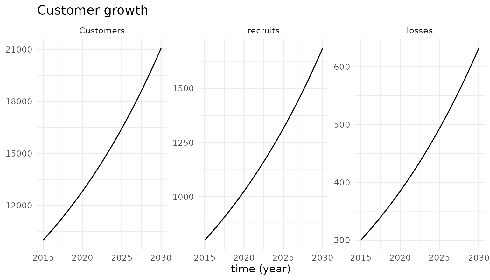
2. S-shaped growth (logistic)
A fractional growth rate scaled by an “effect of availability” that falls linearly to zero as the stock fills its carrying capacity. Reinforcing loop dominant early, balancing loop dominant late.
out <- sd_example_run("s_shaped_growth")
autoplot(out, vars = c("Stock", "net_flow", "growth_rate"))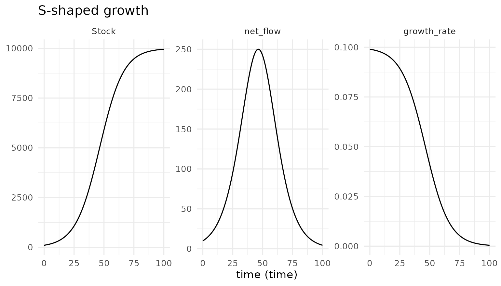
3. Overshoot and collapse
Capital reinvests a fraction of its profit;
Resource is a finite pool that only drains. Extraction
efficiency is a graphical function of the remaining resource – flat
while abundant, collapsing as it depletes. Five scenarios on the
reinvestment fraction and desired growth.
out <- sd_example_run("overshoot")
autoplot(out, vars = c("Capital", "Resource"))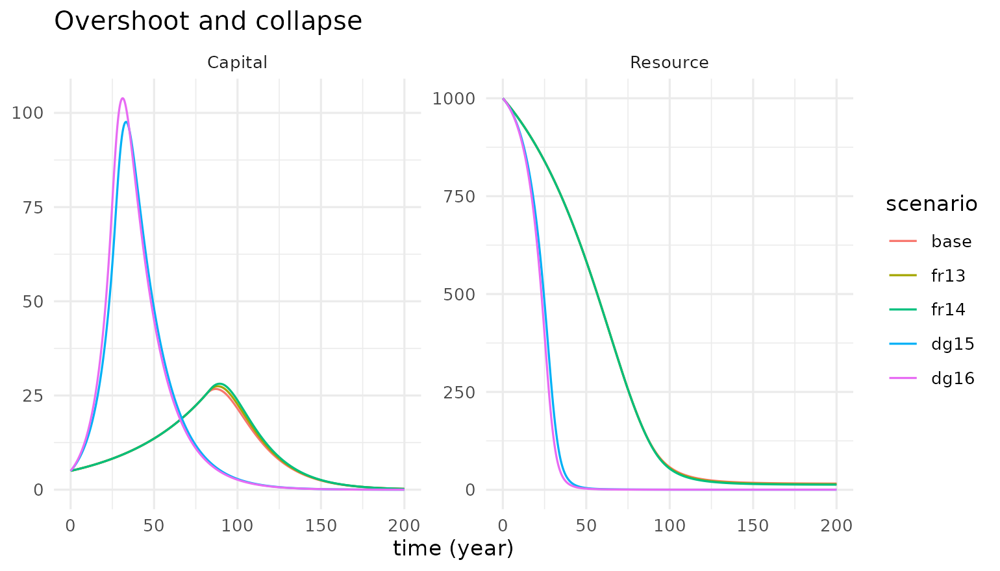
4. Solow economic growth
Output is concave in capital (labour * sqrt(Machines));
a fixed fraction is reinvested, capital depreciates linearly. Converges
to the steady state where investment equals depreciation – here exactly
40,000 machines.
out <- sd_example_run("solow")
autoplot(out, vars = c("Machines", "investment", "discards"))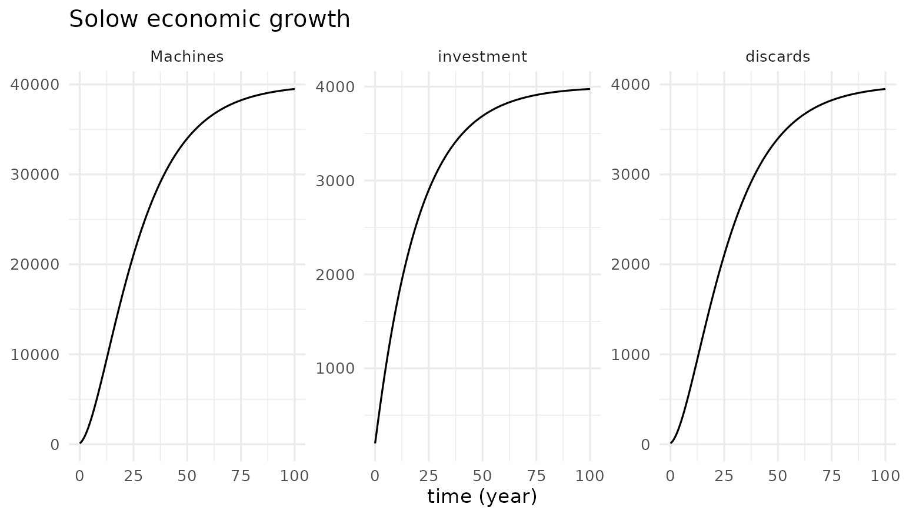
5. SIR
Three stocks, two flows, frequency-dependent transmission and a constant recovery rate. The grammar’s reference case.
out <- sd_example_run("sir")
autoplot(out, vars = c("S", "I", "R", "IR", "RR"))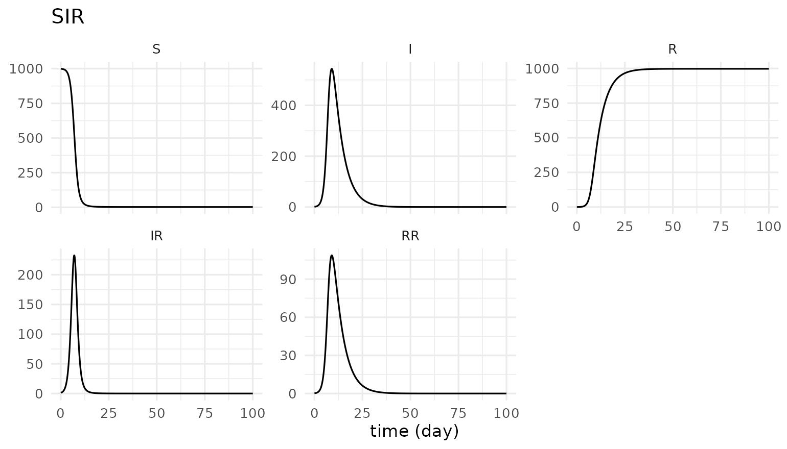
6. Bass diffusion
Adoption driven by word of mouth only. S-shaped cumulative adoption, bell-shaped adoption rate.
out <- sd_example_run("bass")
autoplot(out, vars = c("PotentialAdopters", "Adopters", "adoption_rate"))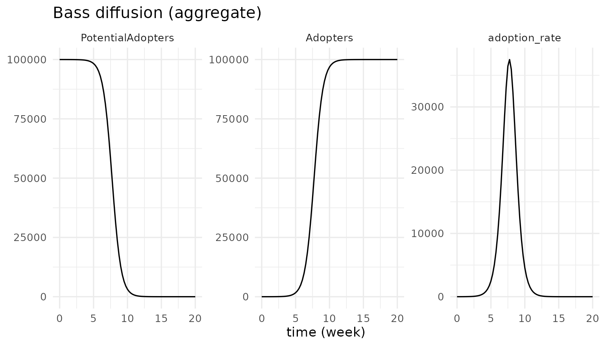
7. Cohort SIR
The population split into three cohorts, each with its own S/I/R,
coupled by a 3x3 contact matrix. The force of infection is a
matrix-vector product; one S -> I -> R chain declared
once over a cohort dimension.
out <- sd_example_run("cohort_sir")
autoplot(out, vars = "I")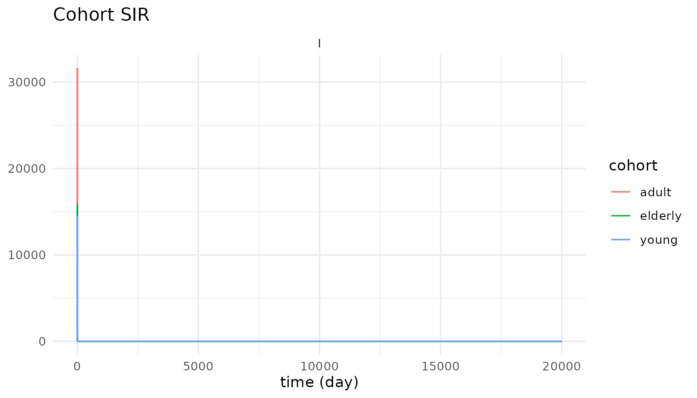
8. Material delay
A step increase in the inflow, an outflow equal to the stock over a fixed delay time. The outflow lags the inflow and approaches it exponentially.
out <- sd_example_run("material_delay")
autoplot(out, vars = c("Material", "inflow", "outflow"))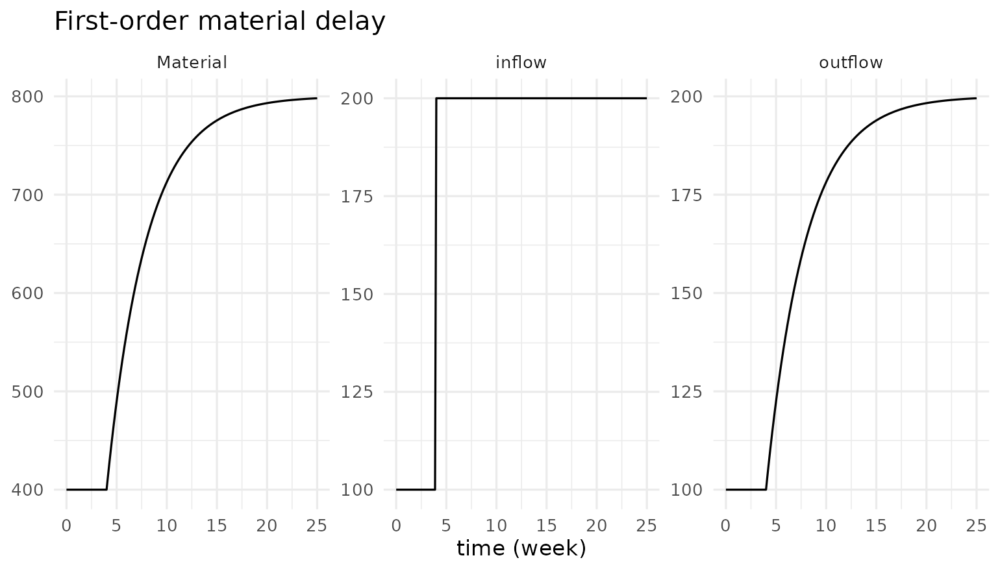
9. Teacup cooling
The smallest complete stock-and-flow model there is: one stock, one outflow proportional to the gap between the stock and a constant goal.
out <- sd_example_run("teacup")
autoplot(out, vars = c("TeacupTemperature", "heat_loss_to_room"))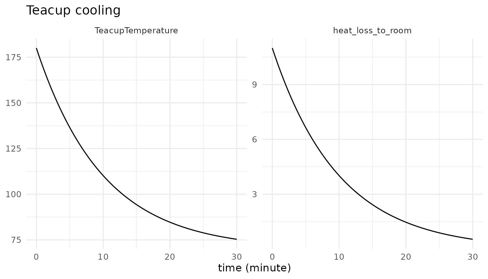
10. Lotka-Volterra
Two stocks with reciprocal nonlinear coupling. The file asks for
Euler at dt = 0.0625, which inflates the peaks and drives
prey to numerical zero – kept as shipped.
out <- sd_example_run("lotka_volterra")
autoplot(out, vars = c("Prey", "Predators"))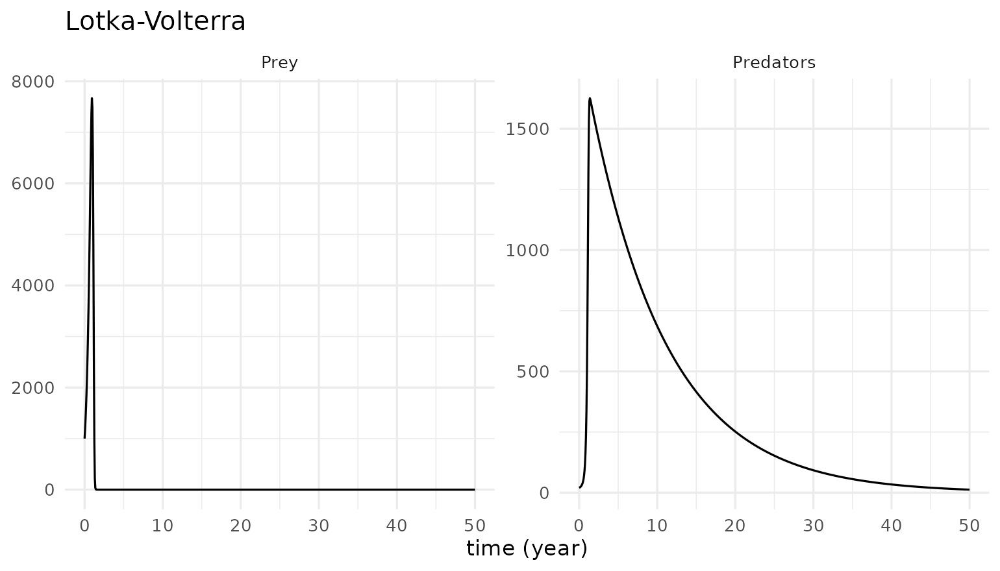
11. Town population with an aged outflow
One Population stock replicated over 351 towns. Deaths
are the birth flow pushed through an eighth-order delay of one lifespan
– an aging chain written as one delayN().
out <- sd_example_run("town_population")
d <- as.data.frame(out)
d <- d[d$variable == "Population" & d$town %in% c("Town001", "Town010", "Town100"), ]
ggplot2::ggplot(d, ggplot2::aes(time, value, colour = town)) +
ggplot2::geom_line() + ggplot2::scale_y_log10() +
ggplot2::labs(y = "people (log scale)", x = "month") + ggplot2::theme_minimal()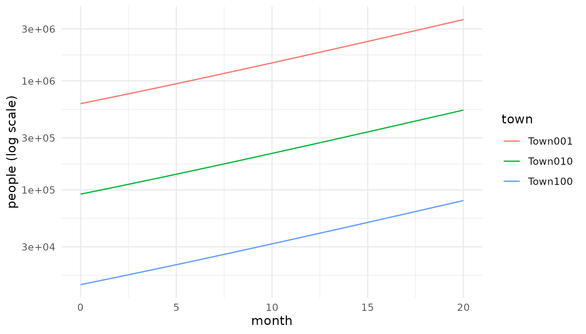
12. SMOOTH
A pure information-delay model: no stocks declared by hand, because every smooth is the stock. The input steps at month 5 and the adjustment time itself steps at month 10.
out <- sd_example_run("smooth")
autoplot(out, vars = c("input", "smooth_1", "smooth_3", "smooth_n"))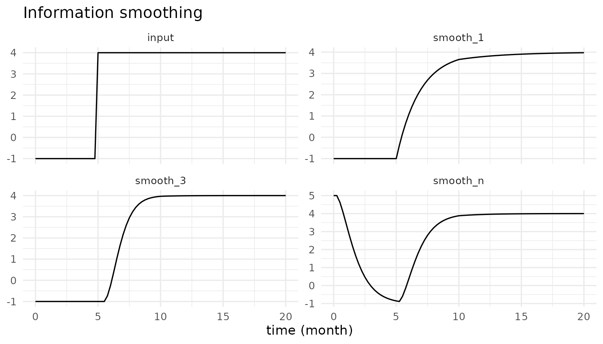
13. FORECAST
Smooth the input, read the growth rate implied by the gap between input and smooth, project it forward. Deliberately naive: it overshoots turning points.
out <- sd_example_run("forecast")
autoplot(out, vars = c("R", "R_delayed", "R_forecast"))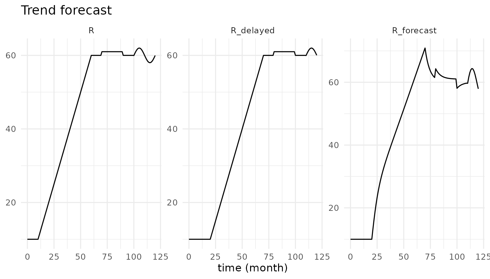
14. Fixed (pipeline) delay
Time^2 driven through eight fixed delays at
dt = 1. Whatever goes in comes out unchanged, exactly
delay later; delay times round to the nearest step, and the
delay may itself be a variable.
out <- sd_example_run("delay_fixed")
autoplot(out, vars = c("time_squared", "DF1", "DF2", "DF37", "DT2"))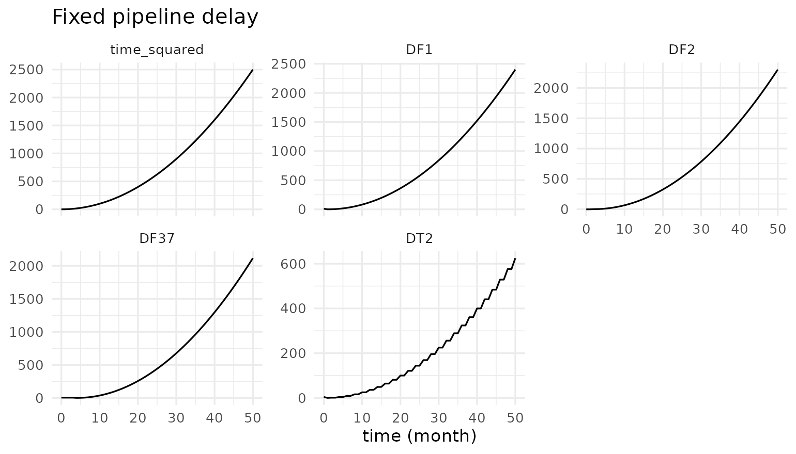
15. Workforce and task backlog
An aging chain of rookies maturing into experts, and a backlog they work off. Rookies consume expert supervision, so hiring in response to a backlog makes the backlog worse before it gets better.
out <- sd_example_run("workforce")
autoplot(out, vars = c("Rookies", "Experts", "TaskBacklog"))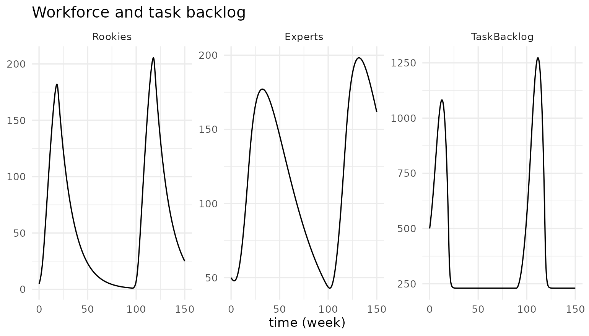
16. Manufacturing defects
Two graphical functions of one backlog that both push the wrong way: a bigger backlog makes people work faster and longer, and the defect rate is the ratio of the two.
out <- sd_example_run("defects")
autoplot(out, vars = c("Backlog", "defect_rate", "arrival_rate"))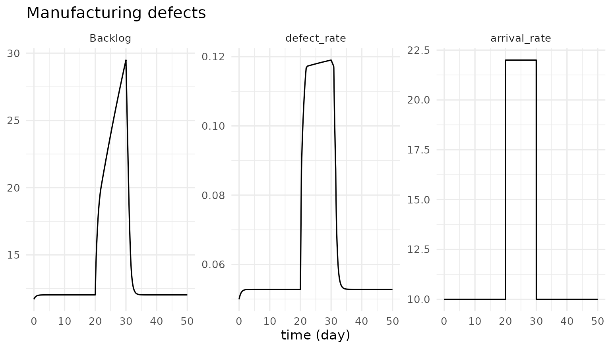
17. Atmospheric carbon bathtub
The smallest possible climate model, and the example of driving a model from a file. With emissions rising and removal proportional to the stock, the stock cannot stabilise.
out <- sd_example_run("carbon_bathtub")
autoplot(out, vars = c("ExcessAtmosphericCarbon", "emission_flow", "natural_removal"))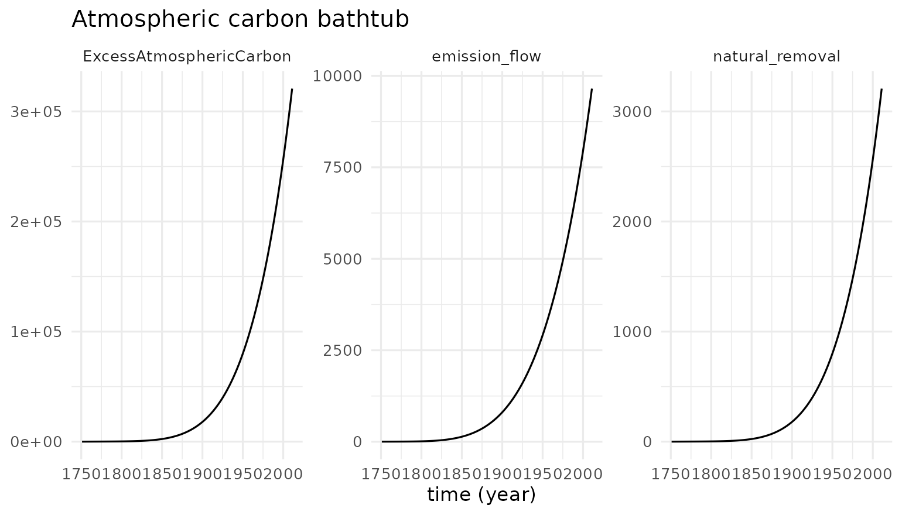
18. Roessler attractor
Three stocks, no lookups – the minimum structure that produces
deterministic chaos. Each flow is a signed net rate. This is the entry
where method matters: Euler at the same dt is
not accurate enough.
out <- sd_example_run("roessler")
autoplot(out, x = "x", y = "y")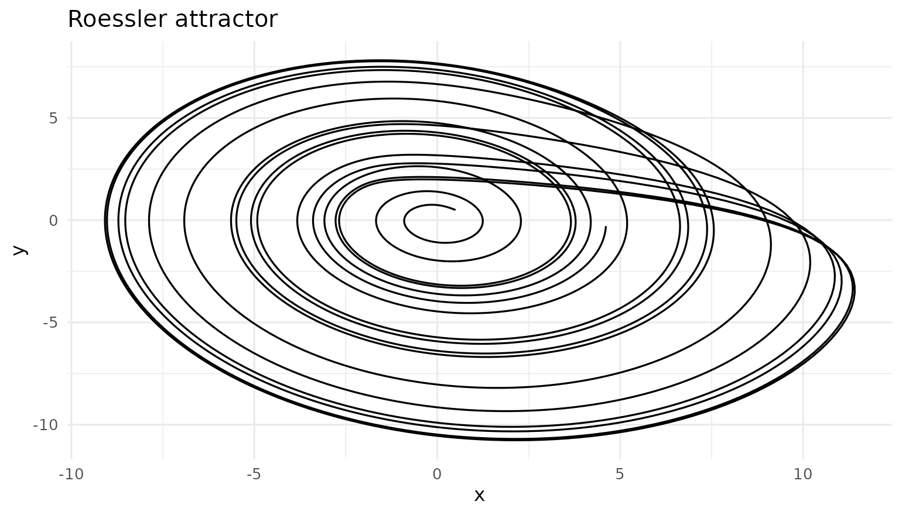
19. Single pendulum
A second-order mechanical system written the SD way: two stocks in a chain, where the flow into position is the other stock. Undamped, so RK4 conserves energy and Euler pumps it in.
out <- sd_example_run("pendulum")
autoplot(out, vars = c("AngularPosition", "AngularVelocity"))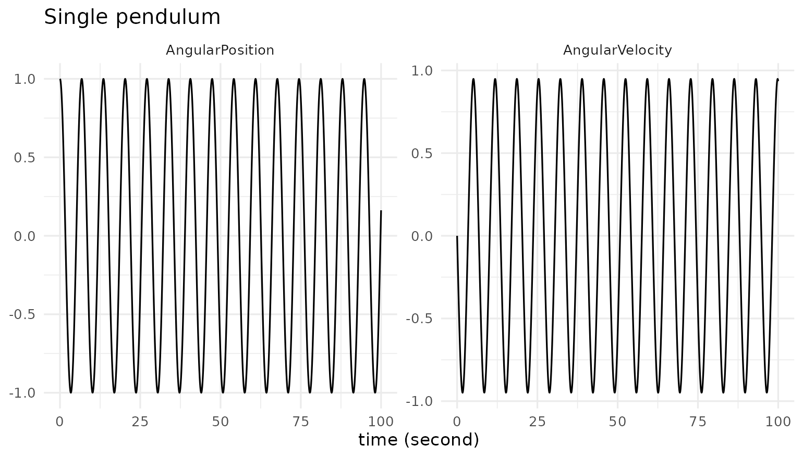
20. Sales agent motivation
Motivation is a stock adjusting toward income; income depends on sales, sales on effort, effort on motivation through a sharply convex graphical function. A start-up subsidy holds the loop up; when it ends, the loop reverses.
out <- sd_example_run("sales_agents")
autoplot(out, vars = c("Motivation", "Tenure"))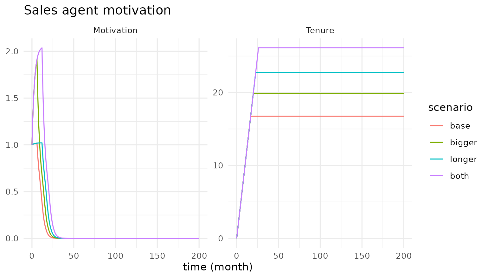
21. Capability trap
Repenning and Sterman’s archetype. Pressure to do work buys output now but shortens improvement time, so the fast loop starves the slow one. At the shipped defaults the model sits in exact equilibrium; a small pressure step decides which way it goes.
out <- sd_example_run("capability_trap")
autoplot(out, vars = c("Capability", "actual_performance"))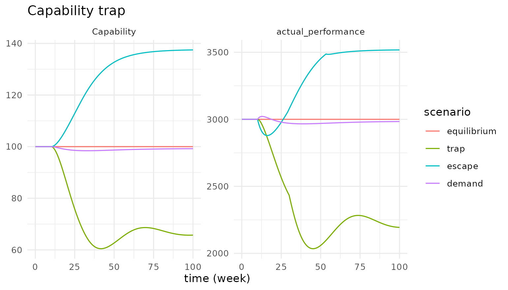
22. Boarding-school flu – SIR fitted to real data
The 1978 English boarding-school influenza outbreak: 763 boys, one
index case, daily counts of boys confined to bed over about two weeks.
An SIR model with mass-action transmission is fitted to those counts
with calibrate().
ex <- sd_example("boarding_school_flu")
fit <- calibrate(ex$structure, ex$equations, ex$parameters, spec = ex$spec,
observed = ex$observed, target = ex$calibration$target,
free = ex$calibration$free,
lower = ex$calibration$lower, upper = ex$calibration$upper)
fit
#> <sd_calibration>
#> estimated:
#> beta 0.00218772
#> infectious_period 2.25504
#> SSE 4121.92 over 15 observations
#> convergence 0 (converged)
out <- simulate(ex$structure, ex$equations, fit$parameters, spec = ex$spec,
observed = ex$observed, map = ex$map)
autoplot(out, vars = "I")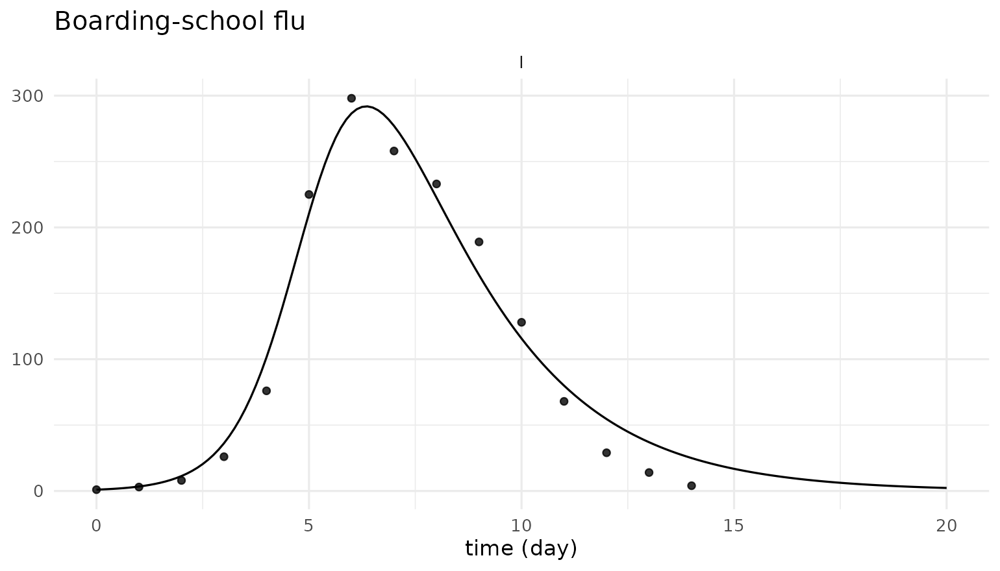
Diagrams come from the model
The stock-and-flow and causal-loop diagrams are functions of the model, not drawings you maintain alongside it.
ex <- sd_example("sir")
d <- sd_diagram(ex$structure, ex$equations, ex$parameters, type = "sfd")
d$edges
#> # A tibble: 13 × 4
#> from to kind sign
#> <chr> <chr> <chr> <chr>
#> 1 S IR outflow NA
#> 2 IR I inflow NA
#> 3 I RR outflow NA
#> 4 RR R inflow NA
#> 5 contact_rate beta information +
#> 6 infectivity beta information +
#> 7 total_population beta information -
#> 8 beta lambda information +
#> 9 I lambda information +
#> 10 S IR information +
#> 11 lambda IR information +
#> 12 I RR information +
#> 13 recovery_time RR information -
autoplot(d)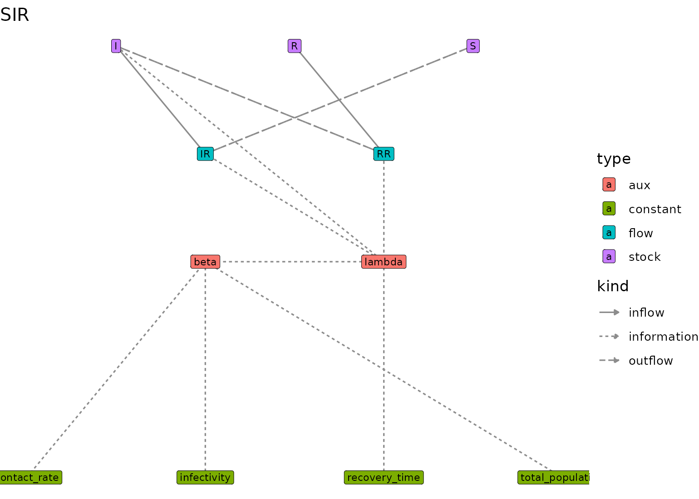